The idea
Explore a coast by boat. Photograph everything. Keep a journal of it.
Coastline is a browser game I made by talking with an AI. You sail a little boat along a stretch of cliffs, coves and islands, and you take photographs: whales and dolphins, sea stacks at sunset, a lighthouse in fog, the aurora over the water, a campfire on the beach. Every new thing you capture goes into your journal, and good photos earn money for better gear.
It started as an experiment and a way to learn. It grew into a whole world.
How you play
Sail, spot, frame the shot
Each day you leave the harbor with a tank of fuel and come back before it runs out. Press F to raise the camera, zoom in, focus, and shoot. The game checks what's in the frame and grades the shot from Poor to Excellent.
Some subjects only appear at the right moment: the sea stacks at sunset, the strange light under the eastern cliffs at night, a whale breaching in the fog. The journal tells you when and where to look.
Upgrades include a telephoto lens, a camera drone, sonar for things too deep to see, diving gear, a fishing rod, a searchlight and fireworks.
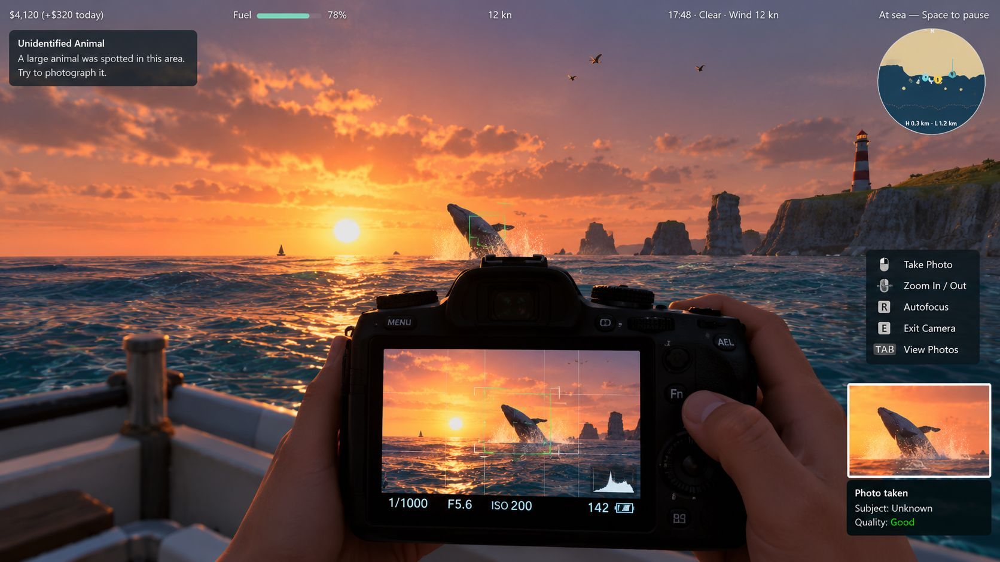
The coast
A world built from code
There are no model files in Coastline. Every cliff, boat, animal and building is put together by code from simple shapes, and the terrain, sea, sky and grass are drawn by shaders. These are screenshots from the game itself.
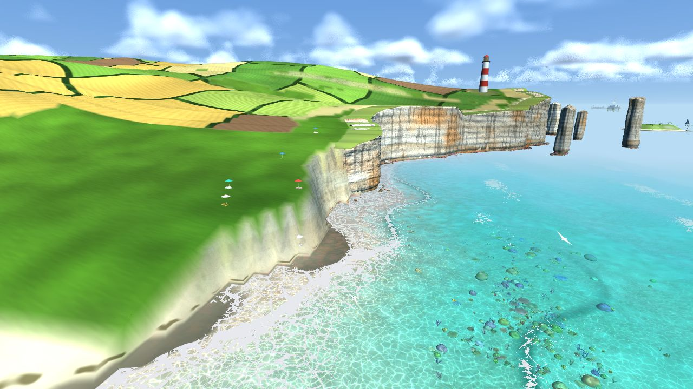
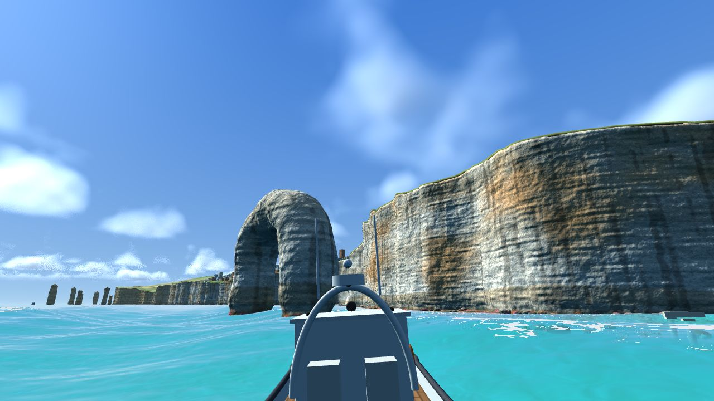
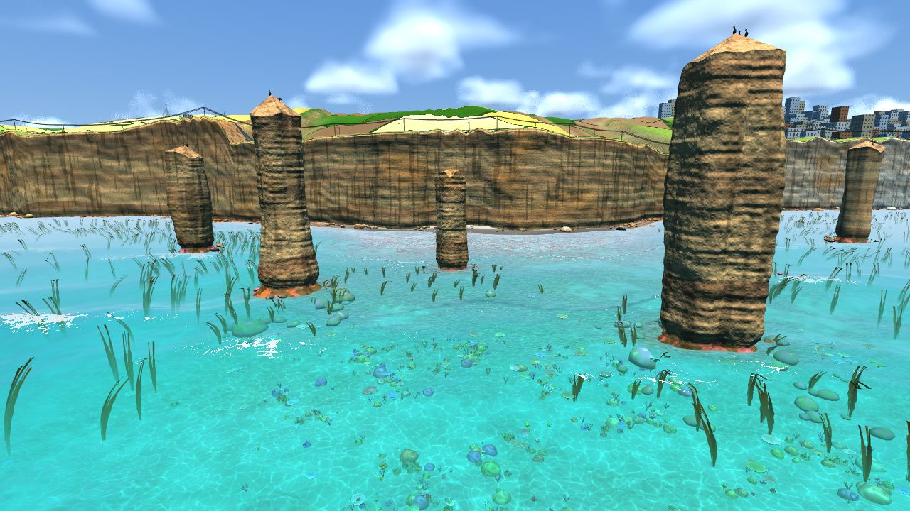
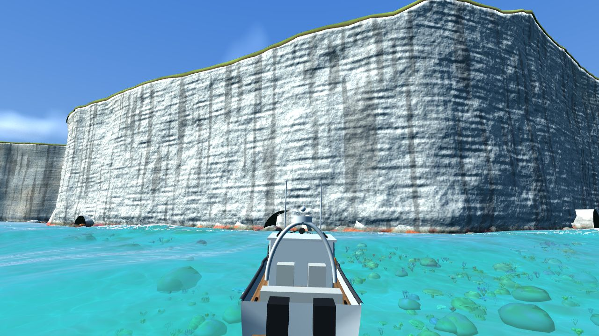
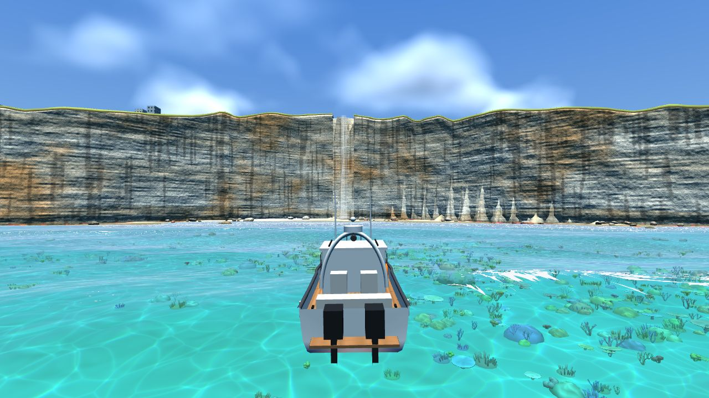
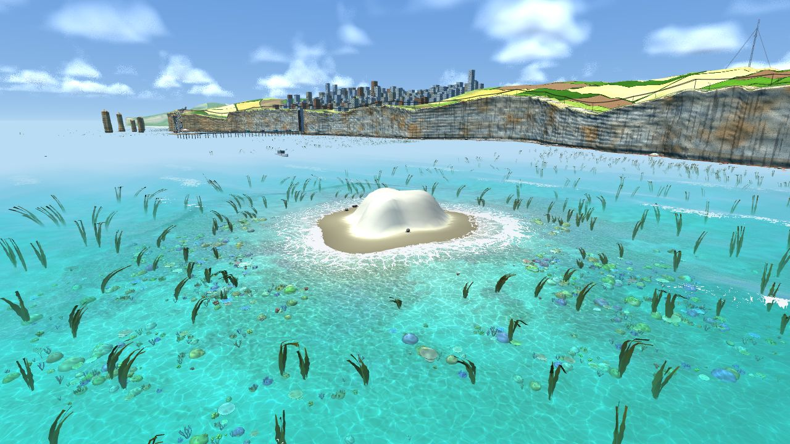
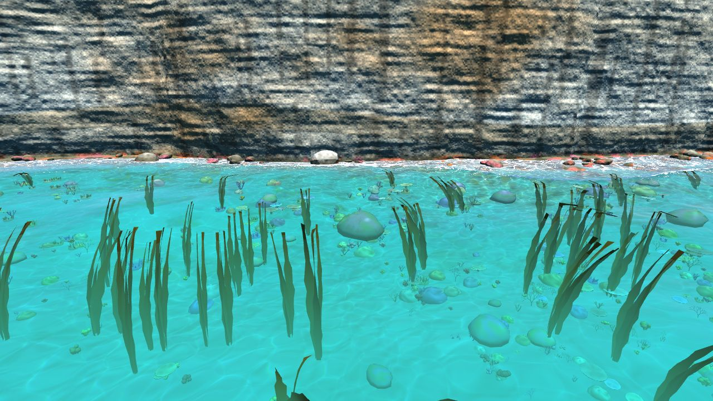
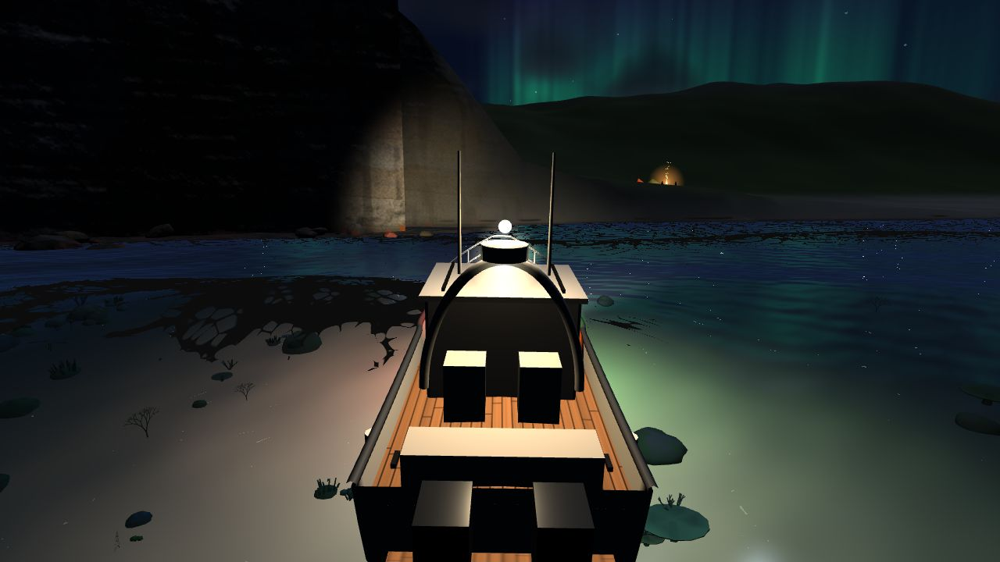
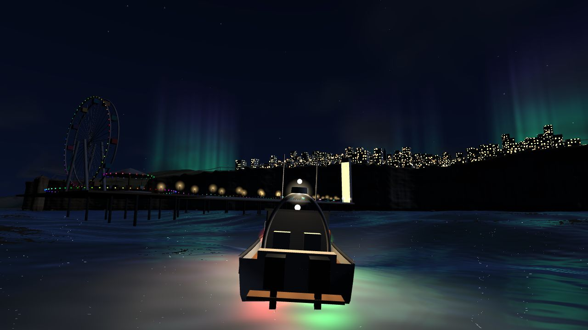
The journal
The heart of the game
Every discovery gets a page: your best photo of it, a short description, the best time and weather to find it, where to look, and a star rating for your shot. I drew the idea first, as a picture of a worn field notebook, and then we built the real thing.
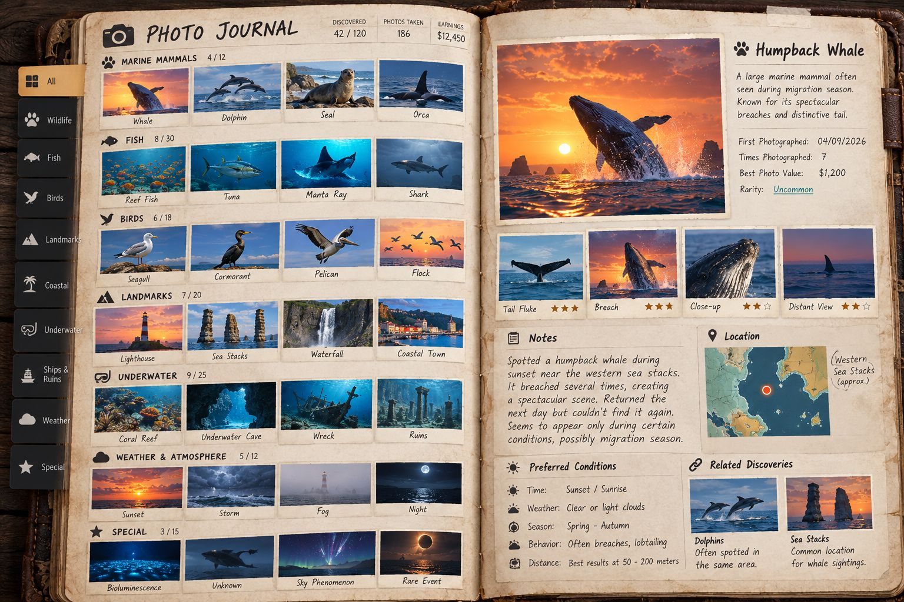
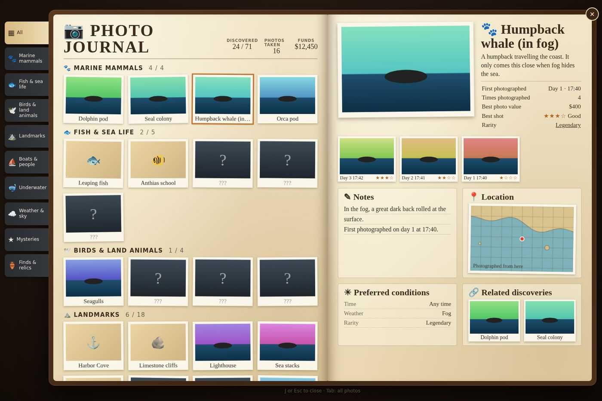
How it was made
Made by conversation
I didn't write the code myself. I described what I wanted, sent screenshots of what was wrong and photos of what it should look like, and an AI wrote and tested the code. Each round came back as a numbered zip that I played and judged. The game is plain JavaScript and three.js, 31 scripts that run straight in the browser.
Most of the work was looking closely and saying what was off: the cliffs didn't meet, the grass looked like smeared lines, then like dots instead of blades. The grass alone took several tries.
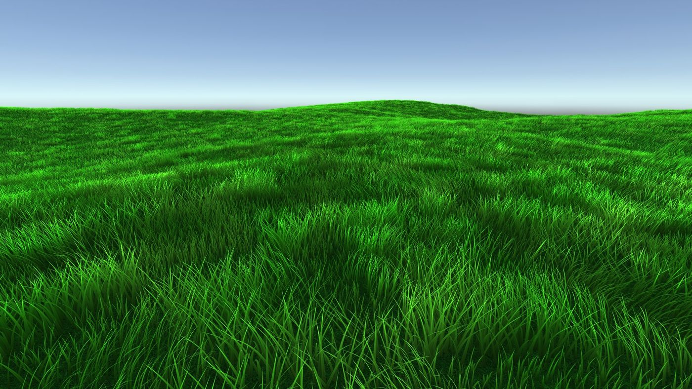
The reference
Dense grass blowing in the wind, without hurting performance.
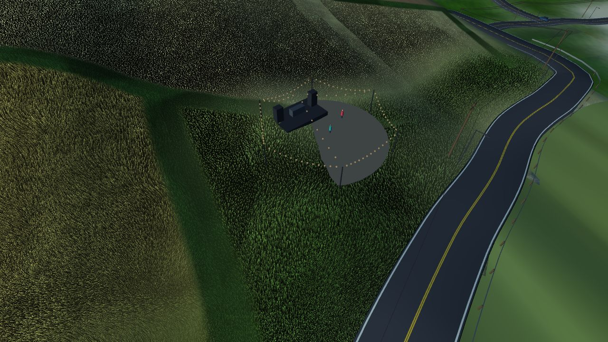
Patchwork fields
Wheat, hay, pasture and ploughed earth, with hedgerows, all painted by the terrain shader.
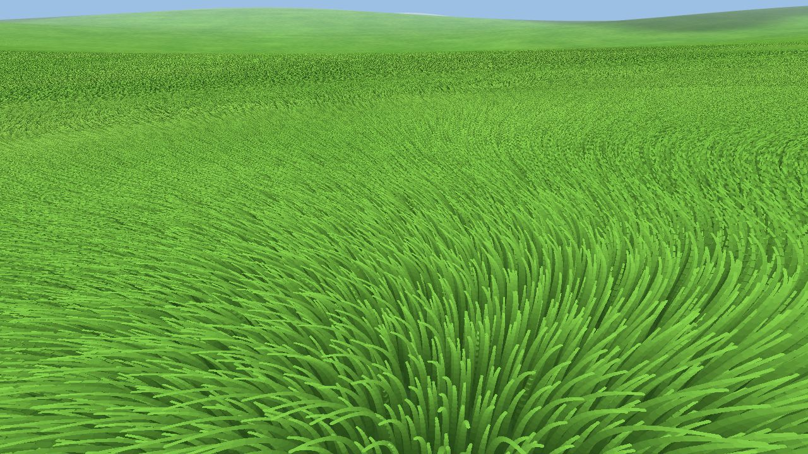
Real blades
No geometry: the shader steps through a layer of bent, tapering blades for every pixel.
Tools for changing the world
Later I wanted to fix where things were and how they looked without asking each time. So all the placements moved into one world file, and we built two editors on top of the game: a world editor with a move gizmo, and a model editor for the shape and colour of every object and animal.
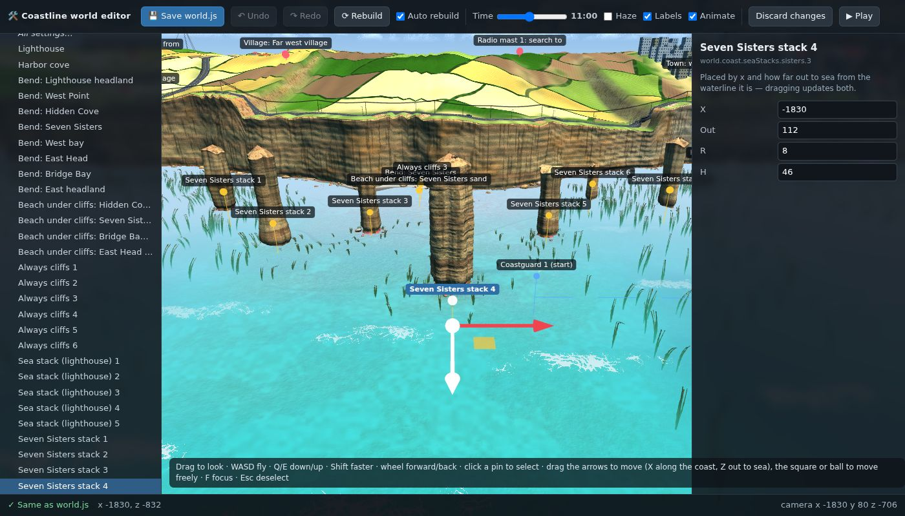
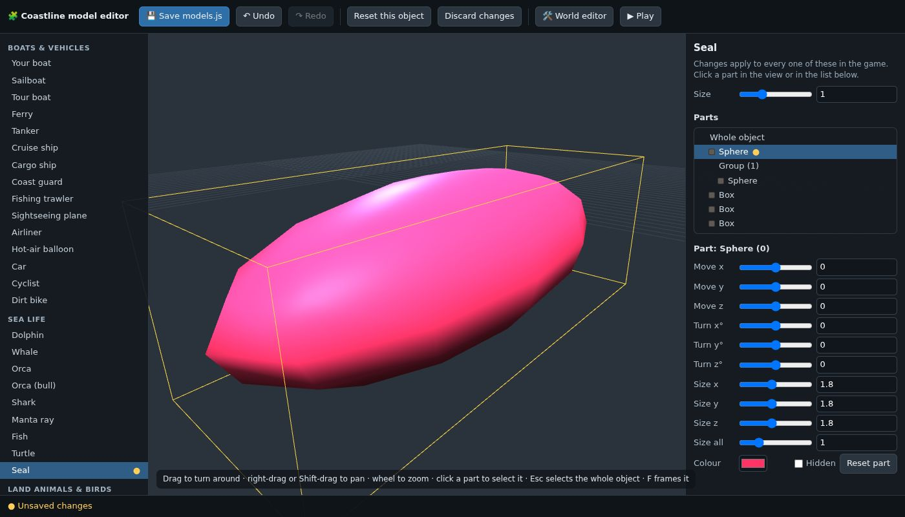
A few milestones
- v4.8Grass and patchwork fields drawn by the terrain shader, and road markings that finally showed.
- v5.0Grass with real height: bent blades, deep shade between them.
- v5.1–5.6Everything's position moved into a world file, then a world editor with a Blender-style gizmo.
- v5.7–5.9Kelp forests, only on rock, swaying with the waves.
- v6.0–6.1Save any photo from the gallery at full screen resolution.
- v6.2The model editor.
My thought process
How I thought about it
Looking back, the same few ideas kept steering every decision.
Start from a feeling
I wanted calm, light and discovery: being out on the water with a camera, waiting for the right moment. Every feature had to fit that mood. Fireworks and a party on the clifftop made it in because they're things you'd want to photograph at night.
Show, don't describe
Pictures were my main language. A screenshot of what looked wrong next to a photo of what it should look like said more than any paragraph. A wind-swept field, an aerial view of farmland, a worn photo journal: each one set the target.
The world should reward looking
The best subjects depend on time, weather and luck: sea stacks at sunset, a whale in the fog, the aurora on a clear night. The journal is the guide to all of it, so it became the heart of the game.
Believable before beautiful
Things should behave like the real thing. Kelp grows only on rock, never on sand. Grass bends with the wind instead of standing straight. Cars have headlights, road lights are soft, sounds don't repeat too often. Small truths add up to a place that feels real.
Rich, but light
I wanted dense grass and thousands of plants without slowing the game down. That pushed toward clever tricks over brute force: grass drawn by a shader with no geometry, kelp swaying on the graphics card.
Let me shape it myself
After a while I wanted to fix where things were and how they looked with my own hands, not by asking each time. That turned the game into a world file and two editors, which is how real games are built.
Play it, then decide
Every change came back as a version I could play. I judged it by eye, said what was off, and moved on in small steps. When the process got heavier than the game, I said so.
Think beyond the browser
Once the idea worked, I started picturing it bigger: real lighting in Unreal, a social bay in VRChat, an entire world where everything can be photographed. Coastline became the sketch for that.
What I learned
What worked, and what I'd do differently
What worked
- Showing instead of describing. A screenshot of the problem and a photo of the goal did more than a paragraph.
- Small steps, each one a numbered version I could play.
- Saying when something was too much, and stopping the AI from over-testing so I could judge it myself.
- Bringing my own idea for the grass shader. The final version came straight out of it.
Next time
- Separate the world's data from the code on day one, and build the editors early instead of late.
- Use version control from the start instead of passing zips back and forth.
- Make the core loop fun and balanced before adding more things to find.
- Use real 3D models for the important objects. Shapes built from code have a ceiling.
- Keep a few fixed test spots and watch the frame rate as the world grows.
References
Places I've never been
I've never been on a boat, and I've never stood on a coast like this one. I built it from photos. Many of its places exist for real: chalk cliffs like the Seven Sisters in England, an arch like Durdle Door, stacks like the Twelve Apostles in Australia.
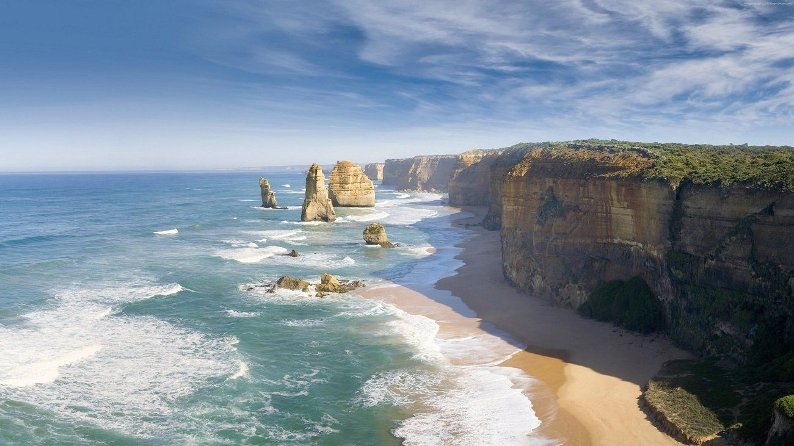
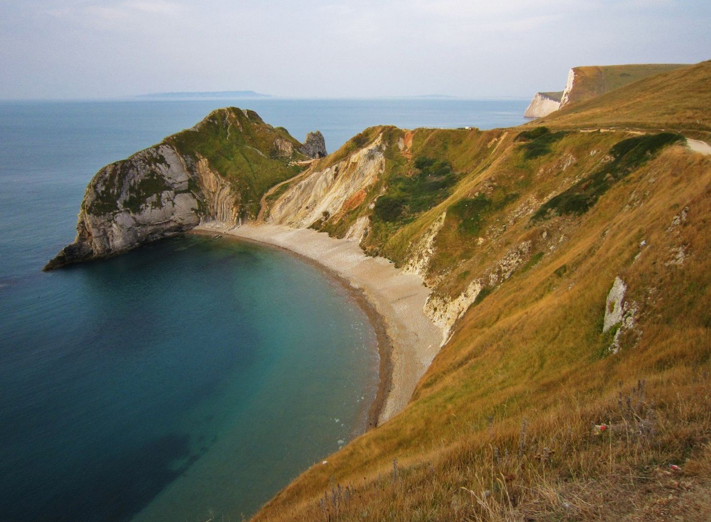
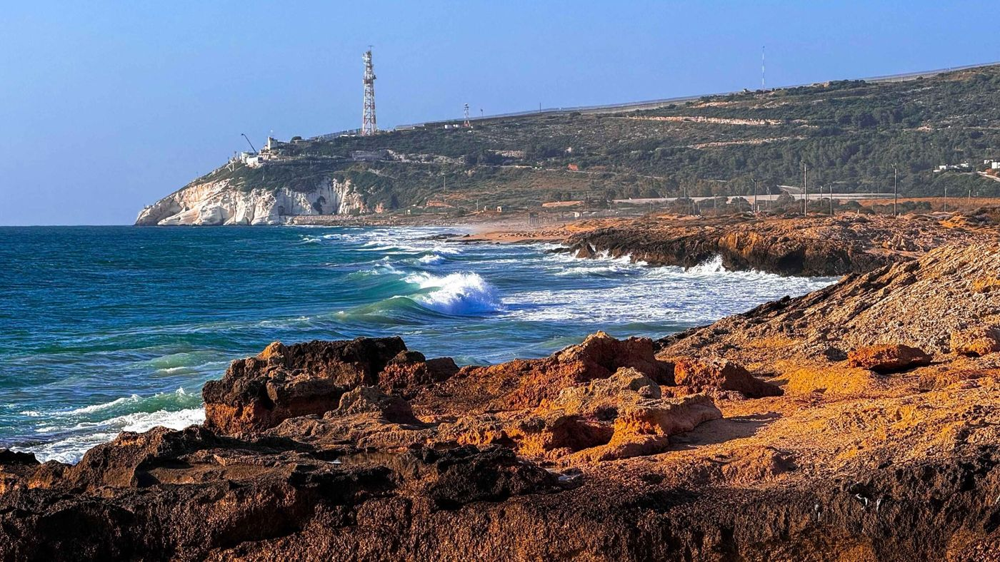
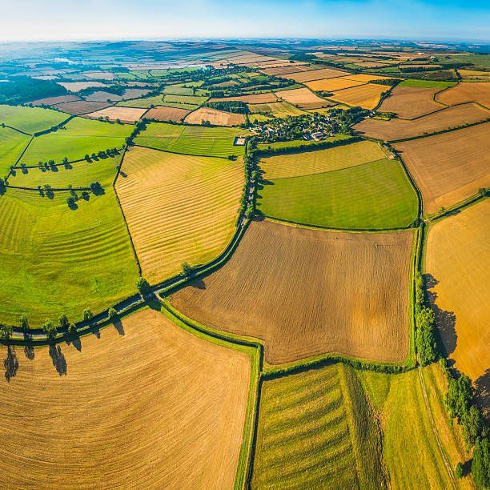
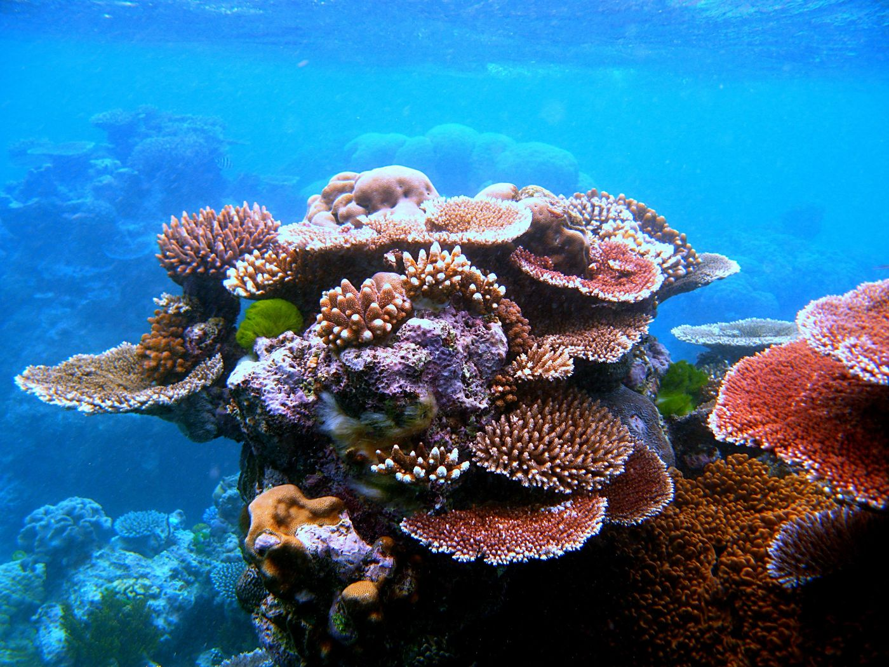
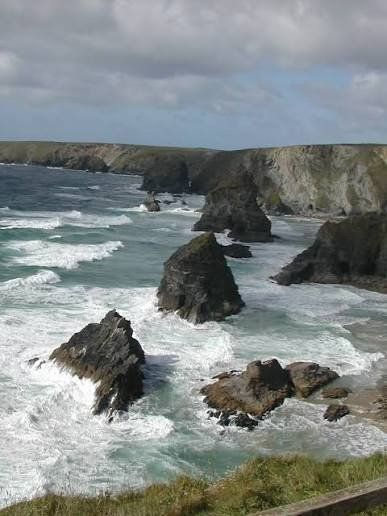
Where it could go
An entire world to photograph
The bigger idea is a whole virtual world where you can photograph everything and put it in your journal. Not just objects, but moments: a whale breaching at sunset, fog in the valley, a fox in the snow. Regions to unlock, better cameras to buy, and maybe an AI that looks at your actual photo and writes its journal entry.
The sensible way there is one region done beautifully first. If that's fun, add the next.
Unreal Engine
The most realistic look: scanned rock, a real ocean, film-quality light. The biggest learning curve, and the most work by hand.
Unity
I know some C#, so I could build things myself faster. Close to Unreal's visuals with the right setup, and lighter to work with.
VRChat
A smaller, social version: one bay to explore with friends, a lighthouse to climb, sunsets to photograph together.
I think I already play this game in real life.
I walk around with a camera and look for the right light. Coastline is that habit turned into a game.